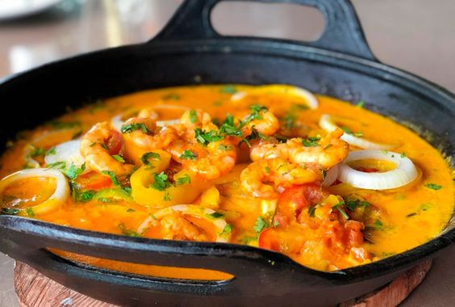

Moqueca

About
Moqueca is a Brazilian dish. It can be made in diferent ways, but the most traditional way is the Bahian style.
Moqueca baiana is a fish stew made with coconut milk, palm oil and pepper. Other ingredients can be added, such as tomatoes, hard boiled eggs, potatoes and other seafood like shrimp.
Ingredients
- 2 bottles of coconut milk
- 500g of tilapia filet
- 3 medium potatoes
- 3 bell pepers of diferent colors
- 2 big tomatoes
- 1 small onion
- 1 cow rib stock cube
- 300ml of water
- 1 packet of potato sticks
- salt and pepper to taste
Steps
- Cut into slices: potato, pepper, tomato, onion.
- In a small pot, boil water with salt, pepper, sazon and the cube.
- Take a bigger pan and put a layer of fish, sprinkle a little salt, make a layer with potato, tomato, pepper and onion and then fish, salt until you finish the layers.
- when finished, pour in the water and coconut milk. cook over medium heat for approximately 40 min. or until everything is well cooked.
- serve it with white rice and potato sticks. It's delicious!
Return to main page